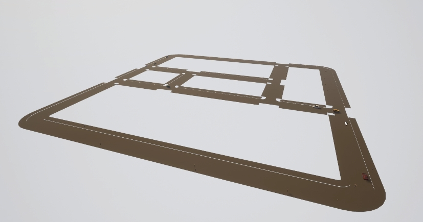
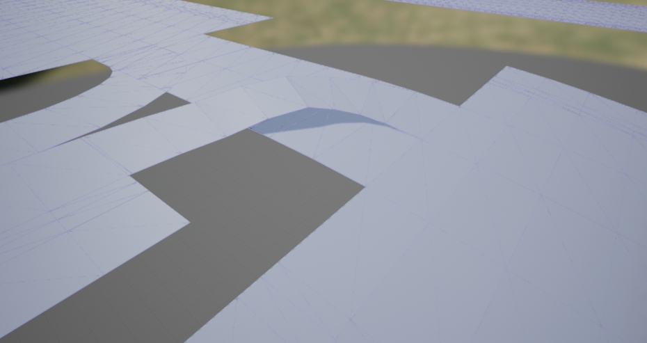

OpenDRIVE独立模式¶
此功能允许用户将任何 OpenDRIVE 文件作为 Carla 地图开箱即用。为此，模拟器将自动生成道路网格供参与者导航。
概述 ¶
此模式仅使用 OpenDRIVE 文件运行完整模拟，无需任何额外的几何图形或资产。为此，模拟器采用 OpenDRIVE 文件并程序化地创建时间三维网格来运行模拟。
生成的网格以简约的方式描述了道路定义。所有元素都将与 OpenDRIVE 文件对应，但除此之外，只有 void。为防止车辆掉出路面，采取了两项措施。
- 在车辆流动最复杂的路口，车道稍宽一些。
- 在道路的边界处创建了可见的墙壁，作为最后的安全措施。
交通信号灯、停车标志和让行标志将即时生成。行人将在地图上显示的人行道和人行横道上导航。所有这些元素，以及道路上的每一个细节，都基于 OpenDRIVE 文件。由于独立模式直接使用 .xodr，因此其中的任何问题都会影响到模拟。这可能是一个问题，尤其是在许多车道混合的路口。
!!! 重要的 仔细检查 OpenDRIVE 文件尤为重要。运行模拟时，其中的任何问题都会传播。

运行独立地图 ¶
打开 OpenDRIVE 文件只需通过 API 调用 client.generate_opendrive_world()。这将生成新地图，并阻止模拟，直到它准备好。该方法需要两个参数。
opendrive是解析为字符串的 OpenDRIVE 文件的内容。-
parameters是一个 carla.OpendriveGenerationParameters 包含网格生成的设置。 这个参数是可选的。 -
vertex_distance（默认 2.0 米） - 网格顶点之间的距离。距离越大，网格越不准确。但是，如果距离太小，生成的网格将太重而无法使用。 max_road_length（默认 50.0 米） - 网格的一部分的最大长度。网格被分成几部分以减少渲染开销。如果一部分不可见，UE 将不会渲染它。部分越小，它们被丢弃的可能性就越大。但是，如果部分太小，UE 需要管理的对象太多，性能也会受到影响。wall_height（默认为 1.0 米） - 在道路边界上创建的附加墙的高度。这些可以防止车辆坠入虚空。additional_width（默认为 0.6 米，每边 0.3） — 应用于交叉路口的小宽度增量。这是防止车辆坠落的安全措施。smooth_junctions(default True) — 如果 True，OpenDRIVE 的一些信息将被重新解释以平滑连接处的最终网格。这样做是为了防止在不同车道相遇时可能发生的一些不准确。如果设置为 False，网格将完全按照 OpenDRIVE 中的描述生成。enable_mesh_visibility(default True) — 如果 False，网格将不会被渲染，这可以为模拟器节省大量渲染工作。
为了轻松测试此功能，PythonAPI/util/ 中的config.py 脚本有一个新参数，-x 或--xodr-path。此参数需要一个带有 .xodr 文件路径的字符串，例如 path/example.xodr。如果使用此脚本生成网格，则使用的参数将始终为默认参数。
此功能可以使用 Carla 提供的新 TownBig 进行测试。
python3 config.py -x opendrive/TownBig.xodr
!!! 重要的
client.generate_opendrive_world() 使用 OpenDRIVE 文件的内容解析为字符串 。相反，config.py 脚本需要 .xodr 文件的路径。
!!! 笔记
如果遇到opendrive 无法正确解析错误，请确保对CarlaUE4/Content/Carla/Maps/OpenDrive/目录有写权限。这是服务器正确解析xodr文件所必需的。
网格生成 ¶
网格的生成是该模式的关键要素。只有当生成的网格是平滑的并且完全符合其定义时，该功能才能成功。出于这个原因，这一步正在不断改进。在最后的迭代中，连接点已经过抛光以避免不准确 发生，尤其是在不平坦的车道连接处。

smooth_junctions 参数可防止此类问题。除此之外，不是将整个地图创建为一个独特的网格，而是创建不同的部分。通过划分网格，模拟器可以避免渲染不可见的部分，并节省成本。工作更小还允许生成巨大的地图并包含可能出现在网格的一小部分上的问题。
关于网格生成的当前状态，应考虑一些因素。
- 岔路口平滑。默认平滑可防止上述倾斜连接处的问题。但是，它会在此过程中修改原始网格。如果愿意，将
smooth_junctions设置为 False 以禁用平滑。 - 横向坡度。此功能当前未集成在 Carla 中。
- 人行道高度。目前，所有人行道的硬编码都是相同的。人行道必须高于道路标高才能检测到碰撞，但 RoadRunner 不会将此值导出到 OpenDRIVE 文件。高度是硬编码的，以保证碰撞。
这涵盖了到目前为止关于 OpenDRIVE 独立模式的所有信息。抓住机会并使用任何 OpenDRIVE 地图在 Carla 中进行测试。
论坛中的疑问和建议。